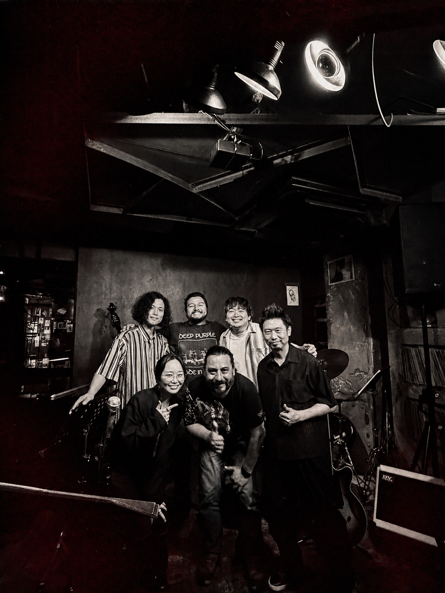

Notes · Tokyo
Luckily, Yamamoto Wasn’t Playing That Night
ALFIE, Tokyo, and the impossibility of hearing everything

Jazz House ALFIE · Roppongi, Tokyo · 23 June 2026
Yamamoto wasn’t playing that night. Luckily, we went anyway.
We arrived at Blue Note Tokyo without tickets.
There was no strategy behind it. My cousin Toño wanted to hear jazz, and we—carrying the unjustified confidence of people who do not know a city—assumed we could arrive, buy tickets, and sit down to listen.
We did not get in.
The trip was not really musical either. We had gone to Japan for my niece’s quinceañera. Tokyo meant anime, neighborhoods, food, walking, and discovering a city none of us fully understood. Jazz was only one plan among many.
But that small defeat at Blue Note changed the itinerary.
That night we started looking for what else was happening in Tokyo jazz. Names, musicians, and clubs we knew little or nothing about appeared. One was a small place in Roppongi: Jazz House ALFIE.
The next morning I sent Toño its schedule. It was in Japanese, and I thought I understood that a pianist named Yamamoto was playing that week.
“Tsuyoshi Yamamoto?”
That changed the conversation.
Toño knew his records. His father was an even bigger fan, and Toño had been looking for Yamamoto recordings during the trip. Suddenly it seemed that, without trying, we had found Tsuyoshi Yamamoto playing a small Tokyo club while we were there.
For a few hours, it was perfect.
There was a problem: ALFIE reservations were made by telephone, in Japanese. It was Monday and the club was closed. We spent much of the day convinced we had found the concert and that, through total logistical incompetence, we would not get in.
Tuesday morning, Toño looked at the schedule again.
We had read it wrong.
Yamamoto had played a few weeks earlier.
We decided to go anyway.
Later we called, got the reservation, and arrived in Roppongi that night without knowing quite what to expect.
I walked in and heard:
“osorio-san, welcome.”
No way.
ALFIE was small, dark, and intimate. Only a few meters separated the tables from the musicians. That night Honami sang, with Naoto Suzuki on guitar, Akiyoshi Shimizu on bass, and Yuto Maseki on drums.
And it was great.
Not because we had secretly discovered “Tokyo’s best musicians.” Nor because the concert fulfilled the plan we had imagined a few hours earlier.
Precisely because we did not know what we were going to hear.
We have a strange problem with music.
It has never been easier to access, and it has probably never been harder to take in.
In one afternoon we can jump from Bill Evans to Metallica, from a Japanese recording from the seventies to a symphony in Berlin, from Afro-Cuban jazz to a group that just appeared in a club on the other side of the world.
The catalogue seems infinite.
Time does not.
Listening therefore becomes a way of choosing. We follow recommendations, musicians, instruments, cities, friends. One thing leads to another. Sometimes a great record opens a door.
And sometimes not getting tickets opens another.
ALFIE was one of those doors.
Before we left, they told us Tsuyoshi Yamamoto still played there with some regularity, roughly every three months.
Toño and I looked at each other.
We have to come back.
It is a frankly disproportionate reason to return to Tokyo. A pianist playing in a tiny club on the other side of the planet is not exactly a rational argument for buying a plane ticket.
But perhaps that is part of the charm.
We cannot hear everything. We can, instead, follow a thread.
One leads to a record. The record to a musician. The musician to another. Sometimes the thread runs through an instrument, a city, or a person. Other times it ends at a door in Roppongi where someone welcomes you by saying Osorio-san.
For now, that thread is Yamamoto.
Not because he is the destination.
Because we still do not know where it leads.
We still haven’t seen him.
Better.
We still have a reason to return.